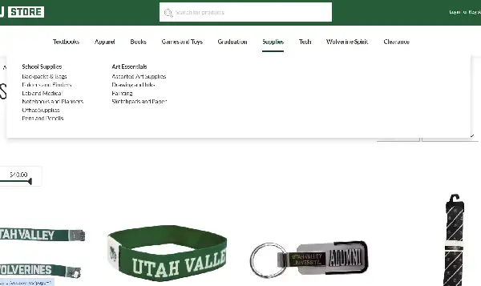
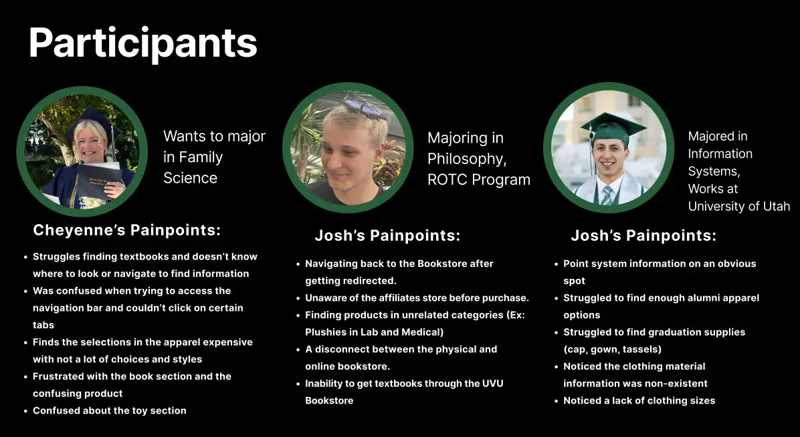
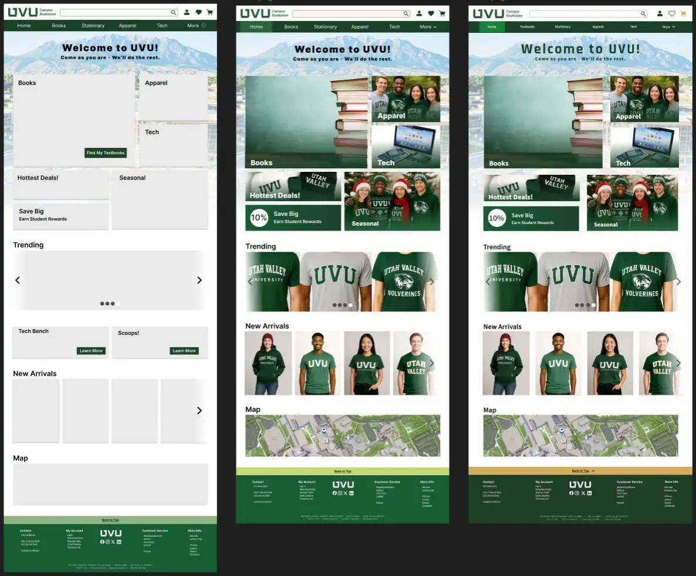
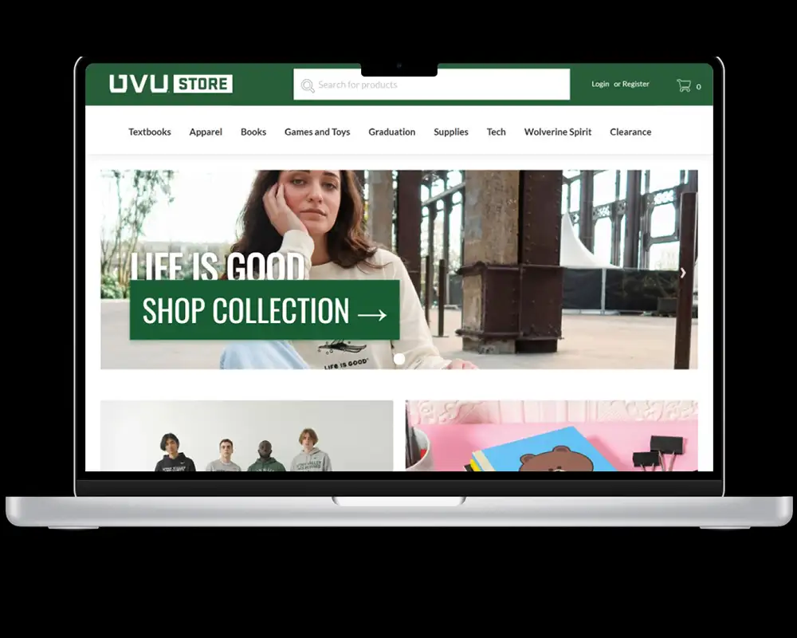
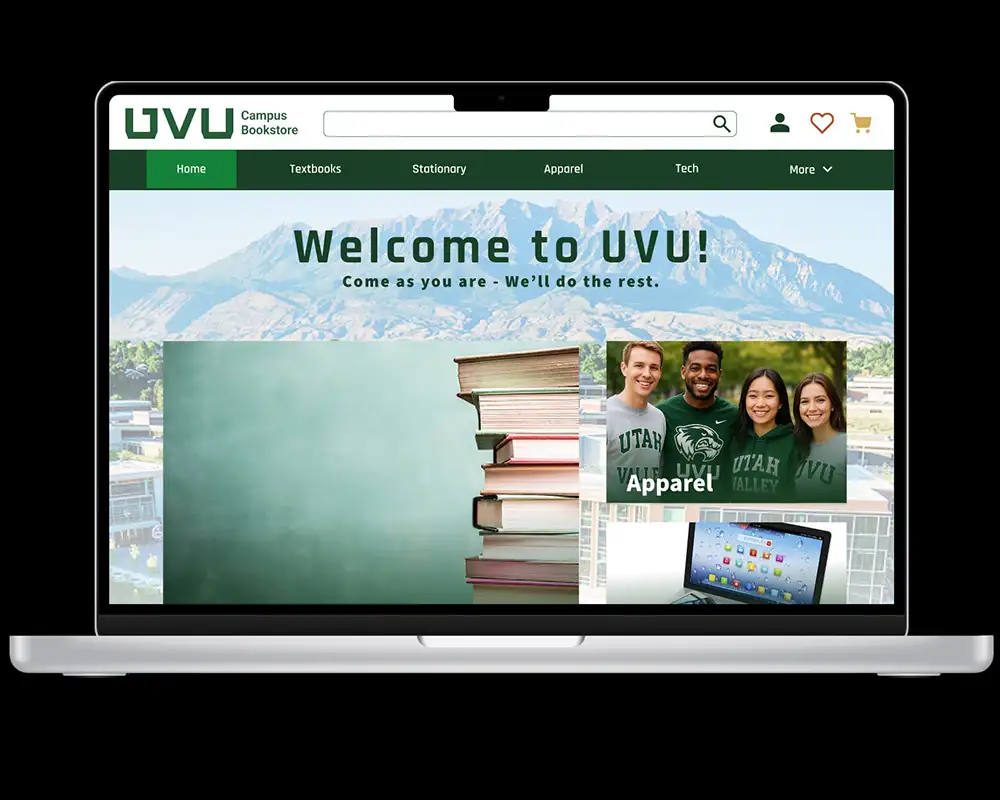

Problem
Customers added items to carts but rarely completed checkout.
Navigation felt confusing and disconnected from expectations.
Site lacked visual appeal and encouragement to explore products.

Solution
I led the homepage redesign to feel more inviting and intuitive.
Focused on student-centered flow, clearer hierarchy, and calmer shopping experience.
My Role
UX/UI Designer
Timeline
12 weeks
Tools
Figma, Illustrator, Eye-tracking

Process Highlights



Design Evolution




Results & Impact
In prototype testing, users completed checkout tasks faster and reported less frustration.
The cleaner layout felt more trustworthy and easier to navigate.
Reflection
Eye-tracking showed me friction points I would have missed otherwise.
Research helped me understand what customers are looking for and how to impliment those ideas into a website.
If I had more time to redo this website, I would create a mobile version that will make the process easier for students who wish to acess the UVU bookstore through their phone.
Interactive Figma Prototype
Click below to explore the full interactive prototype in a new tab.